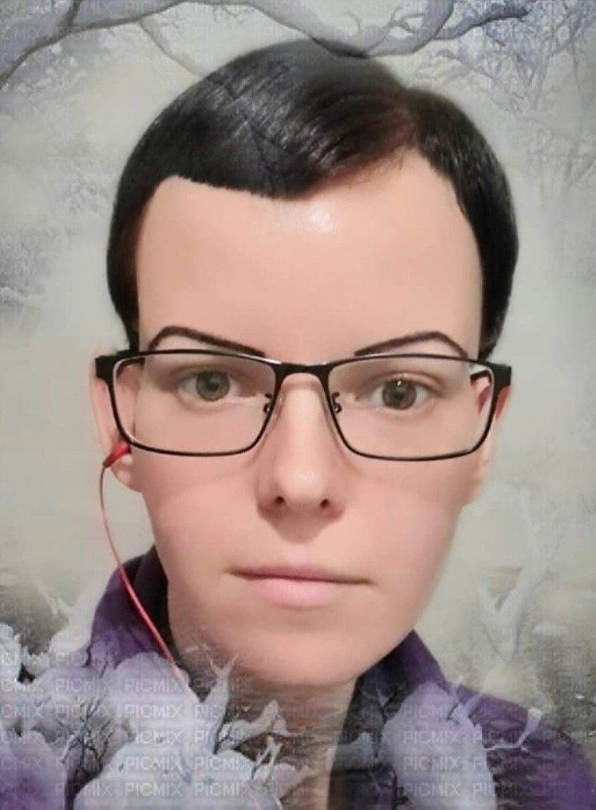

Par mani
Mani sauc Zane. Esmu izlēmusi mainīt savu dzīvi,
sākot mācīties - web
lapu izstrādi, lai ar iegūtajām zināšanām varētu strādāt Freelance kā
mājaslapu izstrādātāja
Lai sasniegtu savu mērķi,es smeļos informāciju no dažādiem bezmaksas avotiem un maksas avotiem, piemēram no: Udemy kursiem. Kurus var ļoti bieži iegādāties ļoti bieži par īpaši izdevīgu cenu.
Bezmaksas informācijas avoti
Maksas informācijas avoti
Mana pieredze
Programmēšana un tehnoloģijas mani jau ir interesējušas no pašas bērnības. Vinmēr interesējuši datori, telefoni, jauno tehnoloģiju iespējas.
Skolā gan tēma programmēšana manā laikā tika skarta maz, tādēļ programmēšanai kā tādai tīņa gados nepiegriezu vērību. Bet turpināju interesēties par tehnoloģijām, datoriem un telefoniem.
Pieaugot gan sapratu, ka programmēšana ir mans dzīves aicinājums, ka vēlos savu turpmāko dzīvi saistīt tieši ar programmēšanu.
Internetā bija pieejama daudz dažāda informācija, par programmēšanu. Par tās virzieniem: FrontEnd un BackEnd.
Es izvēlējos kļūt tieši par FrontEnd izstrādātāju, konkrētāk par Web lapu Izstrādātāju.
Tā nu lēmums tika pieņemts, un sāku mācīties par Web lapu izstrādātāju, izmantojot dažādus maksas un bezmaksas.